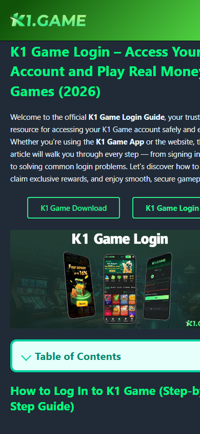

Home / Guides / K1 Game Bonus Code Terms Check
Terms checkK1 Game Bonus Code Terms Check
Clarify bonus-code search intent without promising rewards.
Read terms before code
A code is only useful if the conditions are understandable. Look for turnover, time limits, wallet restrictions, and eligibility wording.
Referral and agent differences
Referral codes and agent programs can have different responsibilities. Do not assume both work the same way.
Risky claim pattern
Guaranteed bonus, hidden rules, or no support trail is a weak signal. Keep evidence before using any code.
K1 public evidence used for this guide
Evidence angle: bonus terms evidence.
Public K1 pages provide context for login/download and bonus-style claims, while this page keeps bonus-code guidance focused on terms, limits, and proof.
This evidence block is not a guarantee that any code, reward, or withdrawal condition will apply.

Mobile checklist
- Read turnover or condition wording.
- Check whether the code is referral, invitation, or agent-related.
- Save the terms screen before using the code.
- Avoid claims that promise automatic cashout.
Competitor SERP attack - 2026-06-29
Bonus code terms check
Competitor edge: Bonus pages pull clicks with code, agent, and registration language.
Competitor gap: They often skip expiry, rollover, withdrawal condition, and agent verification separation.
Our counter move: Make this URL the terms-first page for bonus and agent-code searches.
FAQ to win the query
What must be checked before using a code?
Check code type, expiry, rollover condition, withdrawal rule, and whether agent contact is verified.
Is an agent code the same as a bonus code?
No. Agent, referral, and bonus codes can have different rules and proof requirements.
Which internal links matter most?
Bonus guide, agent verification, and referral-code pages should link here.
Internal routes
bonus and agents guide | agent verification | referral bonus not added
Related next step
For a more specific follow-up, read K1 Game Referral Code Not Working. This keeps related K1 questions connected inside the same topical cluster.
FAQ
Does every bonus code guarantee a reward?
No. Codes can depend on eligibility, timing, turnover, wallet conditions, or account status.
What should I check before using a referral code?
Check who provides it, what conditions apply, and whether support can explain the terms.
Why save a terms screenshot?
Terms can be needed later if the user must ask support about a missing or delayed bonus.
Next navigation step
Choose the page that matches the exact K1 task
Keep the current page focused, then move into the nearest guide, support page, or register route only after the check above is complete.
2026-06-28 internal link update
New related K1 checklist
This page now points to the newest same-site checklist so users and crawlers can move from the core topic to the latest backlog sprint answer.